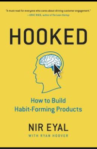
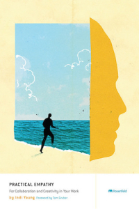
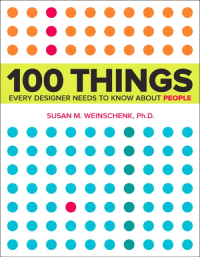
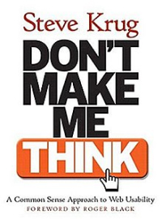
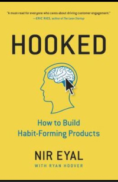
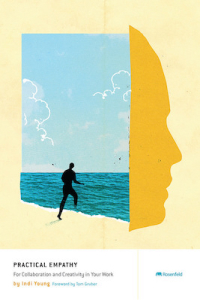
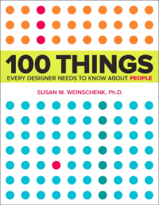
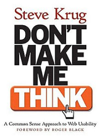

About Edwin Choate
I'm a user experience (UX) designer at TaxSlayer and I'm based out of Atlanta, GA. Within the realm of UX, I am especially interested in usability, information architecture, wireframing, and prototyping. I'm also passionate about things like humane technology and issues such as misinformation on the internet and data privacy. In my spare time, I enjoy reading, listening to folk & americana music, retro 8-bit video games, and playing my acoustic guitar.

Contact
| Email......................... | hello@edwinchoate.com |
| LinkedIn.................. | Connect with Edwin |
Education
Georgia Institute of Technology
B.S. Computational Media
Concentrations in Interaction Design and People
Relevant Courses:
Interaction Design, User Interface Design, Information Design, Visual Design, Information Visualization, Cognitive Science, Human Development, Object-Oriented Programming, Database Systems

UX Reading
I'm continually reading about UX. Some of my favorite books I've read so far...
 







UX Certificates
UX Certificate - UX Research Specialty
Nielsen Norman Group
Proof of Certificate
Human-Computer Interaction - HCI
Interaction Design Foundation
Proof of Certificate
UI Design Patterns for Successful Software
Interaction Design Foundation
Proof of Certificate
User Experience: The Beginner's Guide
Interaction Design Foundation
Proof of Certificate
Design Thinking: The Beginner's Guide
Interaction Design Foundation
Proof of Certificate